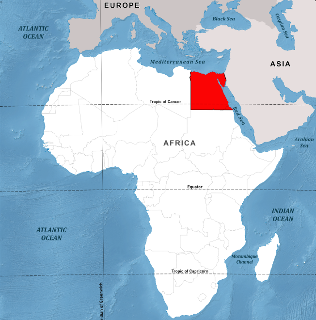
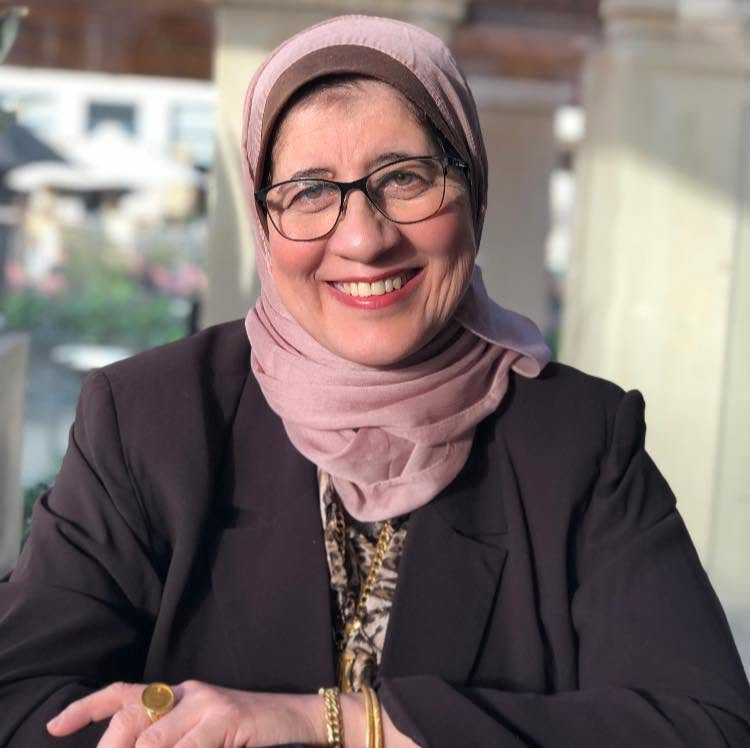

Connecting science, people and possibilities to create meaningful impact in Egypt and beyond.
Egypt stands at the meeting point of the Global South and the international Science for Humanity network — a bridge between local knowledge and global collaboration.


Dr. Amal Amin is a professor of nanotechnology and polymer technology at the National Research Centre, Egypt. She has studied in, worked at and travelled to more than 30 countries — including Spain, Germany (PhD, DAAD), the USA and France — through numerous scientific activities.
She was a co-founder and executive committee member of the Global and Egyptian Young Academies (GYA, EYAS); co-founding president and coordinator of the Egyptian Society and Arab Network for Nanotechnology; a TWAS Young Affiliate and TWAS-TYAN member; a TWAS–AAAS Science Diplomacy alumna; an executive committee member of the Science in Exile global initiative supporting refugee scientists and at-risk scholars; an advisory board member of ISTIC-UNESCO; and a former member of the ORCID Board of Directors. She is one of the coordinating lead authors of the UNESCO Science Report 2026 and a member of the UNESCO International Experts Group on Scientific Literacy and Science Popularization 2026.
Dr. Amal is a Fellow of The World Academy of Sciences (TWAS) and the International Science Council (ISC); founding chair of the Women in Science Without Borders (WISWB) initiative and the World Forum for Women in Science series; founder of the Science for Humanity Foundation-Egypt; co-founding chair of Science for Humanity – Global Society (Italy), the World Forum for Science Innovation and Entrepreneurship, and the Science Diplomacy for the Future initiative; and co-founding chair of the Northern African Research and Innovation Management Association (NARIMA) initiative.
She has received the Outstanding Women in Tech Award of Africa, a national award as a Distinguished Woman in Science, and was named by the Global Gender Scan as one of the few women in S&T in Africa who "make the difference," representing Egypt. She received the 2024 Peace Science and Technology Leadership Award for Exceptional Women for Peace (global award).
Dr. Amal's achievements have been featured in NASAC books (2017, 2020 and 2026), Scientific African (2019), Nature (2020), the Royal Society of Chemistry (2020), and others.
At SHGS, we place humanity at the center of science, creating opportunities for all communities to contribute to and benefit from its advancements.
Read Her MessageBringing together women scientists, researchers, innovators, entrepreneurs and leaders across disciplines and borders.